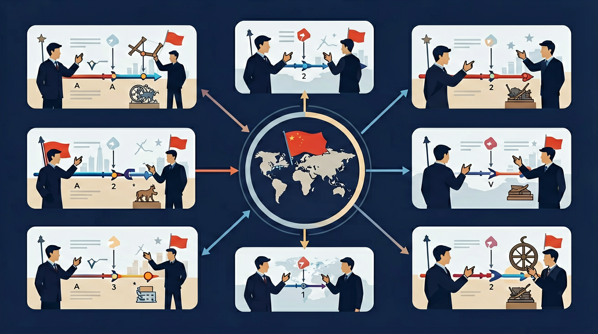

认识五四爱国运动的历史意义，认识马克思主义在中国的传播与中国共产党成立对中国革命的深远影响；认识国共合作领导国民革命的历史作用；了解南京国民政府的成立；认识中国共产党开辟革命新道路的意义；认识红军长征的意义。

🎯 能说出新民主主义革命的三大法宝
🎯 能判断重大历史事件所属革命阶段
🎯 能分析'农村包围城市'路线的必然性
❓ 为啥五四运动算新民主主义革命的开端？
❓ 课本说'无产阶级领导'，可当时工人力量明明很小啊？
❓ 新民主主义革命和旧民主主义革命到底有啥本质区别？
学完这一课，这些问题你都能自信地回答。
新民主主义革命最本质特征是？
下列哪项属于新旧民主革命共同点？
新民主主义革命是高中历史的重要内容。认识五四爱国运动的历史意义，认识马克思主义在中国的传播与中国共产党成立对中国革命的深远影响；认识国共合作领导国民革命的历史作用；了解南京国民政府的成立；认识中国共产党开辟革命新道路的意义；认识红军长征的意义。
通过了解全面内战的爆发及人民解放战争的进程，分析国民党政权在大陆统治灭亡的原因，探讨中国共产党领导人民取得中国革命胜利的原因和意义。
点击时代/图层按钮切换地图；悬停边界，点击城市标记查看说明。
把卡片拖到核心概念 / 方法技能 / 应用情境 / 常见误区。
拖完 4 项后自动判分。
迁移任务：找一道与「新民主主义革命」相关的练习题或生活情境，用本课方法完整解答一遍。
在十月革命与五四运动后，中国革命进入新民主主义阶段，无产阶级通过共产党领导，目标是反帝反封建并走向社会主义前途。经历国民革命、土地革命、抗日战争与解放战争，最终建立新中国。
各阶段主要矛盾、中共策略（统一战线、武装斗争、农村包围城市等）要对应。区分新旧民主革命的领导阶级与前途。
常见误区：常见误区是把新民主主义等同于社会主义革命，混淆阶段目标。
新旧民主革命最主要的区别在于？
你已经学过辛亥革命与民国建立，具备继续探索的底座；在日常生活中，你也早就接触过与「新民主主义革命」相关的现象。
但当问题换了一个情境出现——需要你解释原因、做出判断或解决实际任务时，仅凭零散的旧知识就很容易卡住。
所以本课用一个贯穿的情境任务，带你把「新民主主义革命」拆成可操作的步骤：先看懂它，再动手试，最后用练习和迁移把它变成自己的能力。
按时间轴拆解四个阶段：建党初期→国民革命→土地革命→解放战争
用'领导权+革命对象+前途'三要素理解新民主主义概念
对比旧民主主义：资产阶级领导VS无产阶级领导，资本主义前途VS社会主义前途
观察《开国大典》油画中的阶级符号：工人、农民、知识分子联合执政
用'新旧对比'框架分析越南八月革命性质
复制提示词到 AI 学伴，生成「新民主主义革命」的时间轴或事件提纲；也可以上传你手绘的示意图，请 AI 学伴点评。
复制后可粘贴到 AI 学伴继续对话。
关于新民主主义革命性质最准确的是？
分析1924-1927年和1937-1945年两次国共合作的异同
关于新民主主义革命的学习，哪种做法最科学？
选一个并查看反馈。
先独立作答，再点选项查看对错与错因。
照片中的'五二〇运动'发生在哪一历史时期？
下列哪项不是新民主主义革命的经济纲领？
新民主主义革命的开端是？
毛泽东在《____》中首次明确提出'新民主主义革命'概念
答案：新民主主义论
1940年发表的纲领性文献
1949年____的召开标志着新民主主义革命基本胜利
答案：中国人民政治协商会议
通过《共同纲领》建立新中国
✅ 北伐是国共合作的国民革命，属新民主主义革命第一阶段
💡 混淆了'资产阶级领导'和'资产阶级参加革命'
✅ 该路线是根据中国农民占多数国情独创
💡 机械理解'无产阶级革命'概念
口诀：五四建党打基础，土地革命闯新路，统一战线法宝牛，社会主义是前途
类比：像升级打怪游戏：旧版（旧民主）通关失败，新版（新民主）换了主角团队和攻略
（高考题）中共二大提出'民主联合战线'的实质是？
（迁移题）若分析1945年越南八月革命，可借鉴中国新民主主义革命的哪条经验？
（辨析题）'新民主主义革命属于资产阶级民主革命'的说法是否正确？
点击节点跳转到对应章节；可切换布局。